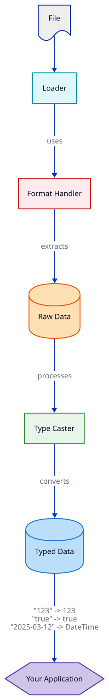

Type Casting in Derafu Spreadsheet
One of the most powerful features of Derafu Spreadsheet is its intelligent type casting system. This enables seamless conversion between spreadsheet file data and native PHP data types.
- The Type Casting Problem
- Automatic Type Casting with Derafu Spreadsheet
- Supported Type Conversions
- Date Format Detection
- JSON Detection and Parsing
- Custom Type Casting
- How Type Casting Works Internally
- Performance Considerations
The Type Casting Problem
Spreadsheet files typically store everything as text, but your application needs properly typed data to work effectively. Other libraries often leave the type conversion to you, resulting in code like:
// Without automatic type casting.
$value = $spreadsheet->getCell(0, 0);
if (is_numeric($value)) {
$value = (int)$value;
} elseif ($value === 'true' || $value === 'false') {
$value = $value === 'true';
} elseif (preg_match('/^\d{4}-\d{2}-\d{2}$/', $value)) {
$value = new \DateTime($value);
}
// ... and so on for every cell.
Automatic Type Casting with Derafu Spreadsheet
Under the hood, the Caster class automatically handles all of these conversions for you:
// With Derafu Spreadsheet - all values are properly typed.
$spreadsheet = $loader->loadFromFile('data.csv');
$value = $spreadsheet->getSheet('Sheet1')->getCell(0, 0); // Already properly typed!

Supported Type Conversions
After doing a load (reading from file/data to PHP)
| File Value | PHP Type | Example |
|---|---|---|
| Empty string | null |
"" → null |
| Integer | int |
"123" → 123 |
| Decimal | float |
"123.45" → 123.45 |
| Boolean text | bool |
"true" → true |
| Date string | DateTimeImmutable |
"2025-03-12" → DateTimeImmutable |
| ISO 8601 date | DateTimeImmutable |
"2025-03-12T14:30:00" → DateTimeImmutable |
| JSON array | array |
"[1,2,3]" → [1, 2, 3] |
| JSON object | array (associative) |
"{"key":"value"}" → ["key" => "value"] |
Before doing a dump (writing from PHP to file/data)
| PHP Type | File Value | Example |
|---|---|---|
null |
Empty string | null → "" |
int/float |
Preserved as is | 123.45 → 123.45 |
bool |
String “true”/“false” | true → "true" |
DateTimeInterface |
ISO 8601 / Date | new DateTime() → "2025-03-12T14:30:00" |
array/object |
JSON string | ["a", "b"] → "["a","b"]" |
Stringable objects |
String representation | $stringable → (string)$stringable |
Date Format Detection
The library automatically detects various date formats:
Y-m-d(2025-03-12).d/m/Y(12/03/2025).Y-m-d H:i:s(2025-03-12 14:30:45).d/m/Y H:i:s(12/03/2025 14:30:45).Y-m-d\TH:i:s(2025-03-12T14:30:45).Y-m-d\TH:i:sP(2025-03-12T14:30:45+00:00).
All dates are automatically converted to UTC for consistency.
JSON Detection and Parsing
With strings that appear to be JSON (starting with { or [), the caster automatically will try to parse them into PHP arrays or objects:
// Cell contains: {"name":"John","age":30}
$person = $sheet->getCell(0, 0);
// Returns associative array: ["name" => "John", "age" => 30]
Custom Type Casting
If you need different casting behavior, you can implement your own SpreadsheetCasterInterface:
use Derafu\Spreadsheet\Contract\SpreadsheetCasterInterface;
class MyCaster implements SpreadsheetCasterInterface
{
// Your custom implementation.
}
// Then use it with your loader/dumper.
$loader = new Loader(new Factory(), new MyCaster());
How Type Casting Works Internally
- When loading a file with
Loader, after the raw data is read,Caster::castAfterLoad()is called. - When saving a file with
Dumper, before writing data,Caster::castBeforeDump()is called. - The type casting is performed on every cell in every sheet, ensuring consistent typing.
Performance Considerations
Type casting is performed in-memory and typically adds minimal overhead. However, for extremely large spreadsheets with millions of cells, you might consider implementing a more selective casting strategy through a custom SpreadsheetCasterInterface implementation.
If you don’t want to use the Caster, you can use the Factory with the Format Handlers directly. If you bypass the Loader and Dumper, no type casting will be done.